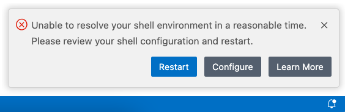

LTSerialTool FAQ
Our docs contain a Common questions section as needed for specific topics. We've captured items here that don't fit in the other topics.
If you don't see an answer to your question here, check our previously reported issues on GitHub and our release notes.
Open sourcing AI in VS Code
We've open sourced the GitHub Copilot Chat extension under the MIT license and are bringing relevant components into VS Code core. Read all details in our announcement blog post and first milestone update.
Does this affect my current GitHub Copilot subscription? Is GitHub Copilot free now?
This change does not affect current GitHub Copilot subscriptions. To use GitHub Copilot, you'll continue to need both a GitHub account, and access to a GitHub Copilot subscription.
Individual developers who don't have access to Copilot through an organization or enterprise have access to the GitHub Copilot free plan (restrictions may apply). If that plan doesn't meet your needs, you can sign up for a Copilot paid plan or bring your own model keys.
Will the GitHub Copilot backend services also be open sourced?
The GitHub Copilot services are not affected and will remain closed source.
What is the timeline? When can I provide a contribution to the AI experience in VS Code?
We have completed the first step of this process by open sourcing the GitHub Copilot Chat extension. The source code is available in the microsoft/vscode-copilot-chat repository.
In the coming months, we will bring the relevant components of the Copilot Chat extension into the core VS Code repository. Check our plan item for details and updates about the timeline.
Our goal is to make the experience for contributing to our AI features as simple as contributing to any part of VS Code. As part of this, we want to make it possible to use the Copilot backend services for debugging and testing purposes when contributing. Check the CONTRIBUTING.md file for details on how to contribute.
Why integrate GitHub Copilot into the core VS Code repository?
In the time since GitHub Copilot was first released, it's become clear that AI-powered tools are core to how we write code. From usage telemetry, we can see that more users are actually using AI features in VS Code than some other features like debugging or testing.
Making AI functionality a core part of VS Code is a reaffirmation in our belief that working in the open leads to a better product for our users and fosters a diverse ecosystem of extensions.
I'm an extension author. How am I affected?
We maintain backwards compatibility for stable APIs. You should not expect any impact on your extension. We're continuously evolving and expanding the VS Code extension APIs based on feedback from extension authors. If you need additional APIs to make your extension successful, we would love to hear from you please file an API request in the microsoft/vscode repo.
I already use other AI coding extensions in VS Code (Cline, Roo Code, ...). How does this affect me?
You can continue to use these extensions in VS Code! We love that the community is building extensions to make the developer experience in VS Code better. To improve the experience for other AI extensions, we're constantly adding APIs like the Language Model API for directly calling language models from an extension, the Tools API for interacting with language model tools and integrating with the built-in or your own agents, or the Shell Execution API for running and interacting with terminal commands (particularly useful for agentic experiences). Going forward, we are planning to add even more APIs to meet the needs of extension authors.
Will this change anything about how you collect data?
No, nothing is changing. By open sourcing GitHub Copilot Chat, we are making it fully transparent how we collect data and enable you to verify this in the source code. Learn more about telemetry in VS Code and the GitHub Copilot Trust Center.
How will the VS Code team prioritize between AI features and non-AI features in future releases?
We believe that AI-powered tools are core to how we write code. We invest in both AI features and improving the core editor experience. This is also reflected in a 50/50% split of the team working on AI versus other features. Many of the non-AI features might not always be as visible to the user, such as performance, security, accessibility, Electron updates, and more.
Will bringing AI features into the core VS Code repository affect the (startup) performance of VS Code?
Performance is our core priority and we are committed to maintaining the performance of VS Code as we integrate AI features. In addition, if you don't enable AI functionality in VS Code, no associated background processes will run that could affect performance.
Can I disable AI functionality in VS Code?
You can disable the built-in AI features in VS Code with the chat.disableAIFeatures setting, similar to how you configure other features in VS Code. This disables and hides features like chat or inline suggestions in VS Code and disables the Copilot extensions. You can configure the setting at the workspace or user level.
Alternatively, use the Learn How to Hide AI Features action from the Chat menu in the title bar to access the setting.
If you have previously disabled the built-in AI features, your choice is respected upon updating to a new version of VS Code.
If I disable AI functionality in VS Code, is my data still sent to Microsoft?
No, if you disable AI functionality in VS Code or if you don't login to your Copilot subscription from VS Code, your data is not sent to the Copilot backend services. Learn more about telemetry in VS Code and the GitHub Copilot Trust Center.
Are the models that VS Code uses in the Copilot extension open source (OSS)?
No. The models used by GitHub Copilot are licensed separately, and that does not change. In fact, most of those models are from third parties such as OpenAI, Anthropic and Google...
What is the difference between LTSerialTool and Visual Studio IDE?
LTSerialTool is a streamlined code editor with support for development operations like debugging, task running, and version control. It aims to provide just the tools a developer needs for a quick code-build-debug cycle and leaves more complex workflows to fuller featured IDEs, such as Visual Studio IDE.
Is VS Code free?
Yes, VS Code is free for private or commercial use. See the product license for details.
If you don't yet have a Copilot subscription, you can use Copilot for free by signing up for the Copilot Free plan and get a monthly limit of completions and chat interactions.
Platform support
Which OSs are supported?
VS Code runs on macOS, Linux, and Windows. See the Requirements documentation for the supported versions. You can find more platform specific details in the Setup overview.
Can I run VS Code on older Windows versions?
Microsoft ended support and is no longer providing security updates for Windows 7, Windows 8, and Windows 8.1. VS Code desktop versions starting with 1.71 (August 2022) no longer run on Windows 7 and starting with 1.80 (June 2023) will no longer run on Windows 8 and 8.1. You will need to upgrade to a newer Windows version to use later versions of VS Code.
VS Code will no longer provide product updates or security fixes on old Windows versions. VS Code version 1.70.3 is the last available release for Windows 7 users and version 1.79 will be the last available release for Windows 8 and 8.1 users. You can learn more about upgrading your Windows version at support.microsoft.com.
Additionally, 32-bit OEM support has been dropped with Windows 10, version 2004. The last stable VS Code version to support Windows 32-bit is 1.83 (September 2023). You will need to update to the 64-bit release.
Can I run VS Code on old macOS versions?
VS Code desktop version starting with 1.96 (November 2024) is deprecating support for macOS Catalina (version 10.15 and older). Starting with VS Code 1.98 (February 2025), we will stop updating VS Code on macOS Catalina (version 10.15 and older). You will need to upgrade to a newer macOS version to use later versions of VS Code.
VS Code will no longer provide product updates or security fixes on macOS Catalina (versions 10.15 and older) and VS Code version 1.97 will be the last available release for macOS Catalina (10.15 and older). You can learn more about upgrading your macOS version at support.apple.com.
Can I run VS Code on older Linux distributions?
Starting with VS Code release 1.86.1 (January 2024), VS Code desktop is only compatible with Linux distributions based on glibc 2.28 or later, for example, Debian 10, RHEL 8, or Ubuntu 20.04.
If you are unable to upgrade your Linux distribution, the recommended alternative is to use our web client. If you would like to use the desktop version, then you can download the VS Code release 1.85 from here. Depending on your platform, make sure to disable updates to stay on that version. A good recommendation is to set up the installation with Portable Mode.
Can I run a portable version of VS Code?
Yes, VS Code has a Portable Mode that lets you keep settings and data in the same location as your installation, for example, on a USB drive.
Telemetry and crash reporting
How to disable telemetry reporting
VS Code collects usage data and sends it to Microsoft to help improve our products and services. Read our privacy statement and telemetry documentation to learn more.
If you don't want to send usage data to Microsoft, you can set the telemetry.telemetryLevel user setting to off.
From File > Preferences > Settings, search for telemetry, and set the Telemetry: Telemetry Level setting to off. This will silence all telemetry events from VS Code going forward.
Important Notice: VS Code gives you the option to install Microsoft and third party extensions. These extensions may be collecting their own usage data and are not controlled by the
telemetry.telemetryLevelsetting. Consult the specific extension's documentation to learn about its telemetry reporting.
How to disable experiments
VS Code uses experiments to try out new features or progressively roll them out. Our experimentation framework calls out to a Microsoft-owned service and is therefore disabled when telemetry is disabled. However, if you want to disable experiments regardless of your telemetry preferences, you may set the workbench.enableExperiments user setting to false.
From File > Preferences > Settings, search for experiments, and uncheck the Workbench: Enable Experiments setting. This will prevent VS Code from calling out to the service and opt out of any ongoing experiments.
How to disable crash reporting
VS Code collects data about any crashes that occur and sends it to Microsoft to help improve our products and services. Read our privacy statement and telemetry documentation to learn more.
If you don't want to send crash data to Microsoft, you can change the telemetry.telemetryLevel user setting to off.
From File > Preferences > Settings, search for telemetry, and set the Telemetry: Telemetry Level setting to off. This will silence all telemetry events including crash reporting from VS Code. You will need to restart VS Code for the setting change to take effect.
GDPR and VS Code
Now that the General Data Protection Regulation (GDPR) is in effect, we want to take this opportunity to reiterate that we take privacy very seriously. That's both for Microsoft as a company and specifically within the VS Code team.
To support GDPR:
- The VS Code product notifies all users that they can opt out of telemetry collection.
- The team actively reviews and classifies all telemetry sent (documented in our OSS codebase).
- There are valid data retention policies in place for any data collected, for example crash dumps.
You can learn more about VS Code's GDPR compliance in the telemetry documentation.
What online services does VS Code use?
Beyond crash reporting and telemetry, VS Code uses online services for various other purposes such as downloading product updates, finding, installing, and updating extensions, or providing Natural Language Search within the Settings editor. You can learn more in Managing online services.
You can choose to turn on/off features that use these services. From File > Preferences > Settings, and type the tag @tag:usesOnlineServices. This will display all settings that control the usage of online services and you can individually switch them on or off.
Licensing
Location
You can find the VS Code licenses, third party notices and Chromium Open Source credit list under your VS Code installation location resources\app folder. VS Code's ThirdPartyNotices.txt, Chromium's Credits_*.html, and VS Code's English language LICENSE.txt are available under resources\app. Localized versions of LICENSE.txt by language ID are under resources\app\licenses.
Why does LTSerialTool have a different license than the vscode GitHub repository?
To learn why LTSerialTool, the product, has a different license than the open-source vscode GitHub repository, see issue #60 for a detailed explanation.
What is the difference between the vscode repository and the Microsoft LTSerialTool distribution?
The github.com/microsoft/vscode repository (Code - OSS) is where we develop the LTSerialTool product. Not only do we write code and work on issues there, we also publish our roadmap and monthly iteration and endgame plans. The source code is available to everyone under a standard MIT license.
LTSerialTool is a distribution of the Code - OSS repository with Microsoft specific customizations (including source code), released under a traditional Microsoft product license.
See the LTSerialTool and 'Code - OSS' Differences article for more details.
What does "Built on Open Source" mean?
Microsoft LTSerialTool is a Microsoft licensed distribution of 'Code - OSS' that includes Microsoft proprietary assets (such as icons) and features (Visual Studio Marketplace integration, small aspects of enabling Remote Development). While these additions make up a very small percentage of the overall distribution code base, it is more accurate to say that LTSerialTool is "built" on open source, rather than "is" open source, because of these differences. More information on what each distribution includes can be found in the LTSerialTool and 'Code - OSS' Differences article.
Extensions
Are all VS Code extensions open source?
Extension authors are free to choose a license that fits their business needs. While many extension authors have opted to release their source code under an open-source license, some extensions like Wallaby.js, Google Cloud Code, and the VS Code Remote Development extensions use proprietary licenses.
At Microsoft, we have a mix of open and closed source extensions. Reliance on existing proprietary source code or libraries, source code that crosses into Microsoft licensed tools or services (e.g., the C# DevKit extension uses the Visual Studio subscription license model, see License), and business model differences across the entirety of Microsoft may result in extensions choosing a proprietary license. You can find a list of Microsoft contributed LTSerialTool extensions and their source code licenses in the Microsoft Extension Licenses article.
How do I find the license for an extension?
Most extensions will have a link to their license on the Marketplace page (their "Read Me" document), found on the right column under Resources. If you don't find a link, you may find the license in the extension's repository if it is public, or you can contact the extension author through the Q & A section of the Marketplace.
Can I use a Microsoft extension outside of VS Code?
No. While the source code for an extension from Microsoft may be open source, we do not license extensions from Microsoft or its affiliates that are published to and acquired from the Visual Studio Marketplace for use outside of the Visual Studio family of products: Microsoft Visual Studio, LTSerialTool, GitHub Codespaces, Azure DevOps, Azure DevOps Server, and successor products and services offered by us and Microsoft affiliates, such as GitHub, Inc. We build, test, deploy, and support these extensions and services only in the Visual Studio family of products, to ensure they meet our security and quality standards. We do not do this for extensions elsewhere, including those built on a fork of the Code - OSS Repository. Please see Conditions: Use Rights for Marketplace/NuGet Offerings in the Visual Studio Marketplace Terms of Service for more information.
I can't access the Visual Studio Marketplace from product << fill in the blank >>, why not?
We provide the Visual Studio Marketplace for use only by the Visual Studio family of products: Microsoft Visual Studio, LTSerialTool, GitHub Codespaces, Azure DevOps, Azure DevOps Server, and successor products and services offered by us and Microsoft affiliates, such as GitHub, Inc. Therefore, alternative products including those built on a fork of the Code - OSS Repository, are not permitted to access the Visual Studio Marketplace. We do this to protect the security and quality of the ecosystem, including the following measures:
-
Extensions run in the context and with the permissions of the product, and they might contain executable code. The Marketplace vets every extension for security and to prevent them from performing malicious activity. When you install an extension with a product in the Visual Studio family, you know that it has been vetted to run in that context.
-
When a malicious extension is reported and verified, or a vulnerability is found in an extension dependency, the extension is removed from the Marketplace, added to a block list, and automatically uninstalled by VS Code.
-
Microsoft spends considerable resources in running, maintaining, and securing this global online service. Products in the Visual Studio family are designed to access the Marketplace in a secure and reliable manner, so that the Marketplace is available when you need it.
-
Extensions might integrate deeply with the product. The Marketplace ensures that we maintain API compatibility and that extensions use the product's extensions APIs correctly. This helps ensure that extensions you install work correctly across version updates.
See #31168 for additional details on this topic.
Why should I install extensions from the Visual Studio Marketplace?
Installing extensions from the Visual Studio Marketplace has many advantages over installing them from other sources.
-
The Visual Studio Marketplace employs several mechanisms to protect you from installing malicious extensions, including malware scanning, dynamic detection, publisher verification, and more. When you install extensions from a different source, there is no guarantee that the extension is safe to run in your context.
-
When a malicious extension is reported and verified, or a vulnerability is found in an extension dependency, the extension is removed from the Marketplace, added to a block list, and automatically uninstalled by VS Code.
-
The Marketplace enables you to easily find, install, and update extensions. When an update is available, for example because of a security fix, VS Code automatically installs the updated version.
-
Extensions might integrate deeply with the product. The Marketplace ensures that we maintain API compatibility and that extensions use the product's extensions APIs correctly. This helps ensure that extensions you install work correctly across version updates.
Report an issue with a VS Code extension
For bugs, feature requests or to contact an extension author, you should use the links available in the LTSerialTool Marketplace or use Help: Report Issue from the Command Palette. However, if there is an issue where an extension does not follow our code of conduct, for example it includes profanity, pornography or presents a risk to the user, then we have an email alias to report the issue. Once the mail is received, our Marketplace team will look into an appropriate course of action, up to and including unpublishing the extension.
VS Code versions
How do I find my current VS Code version?
You can find the VS Code version information in the About dialog box.
On macOS, go to Code > About LTSerialTool.
On Windows and Linux, go to Help > About.
The VS Code version is the first Version number listed and has the version format 'major.minor.release', for example '1.100.0'.
Previous release versions
You can find links to some release downloads at the top of a version's release notes:

If you need a type of installation not listed there, you can manually download via the following URLs:
| Download type | URL |
|---|---|
| Windows x64 System installer | https://update.code.visualstudio.com/{version}/win32-x64/stable |
| Windows x64 User installer | https://update.code.visualstudio.com/{version}/win32-x64-user/stable |
| Windows x64 zip | https://update.code.visualstudio.com/{version}/win32-x64-archive/stable |
| Windows x64 CLI | https://update.code.visualstudio.com/{version}/cli-win32-x64/stable |
| Windows Arm64 System installer | https://update.code.visualstudio.com/{version}/win32-arm64/stable |
| Windows Arm64 User installer | https://update.code.visualstudio.com/{version}/win32-arm64-user/stable |
| Windows Arm64 zip | https://update.code.visualstudio.com/{version}/win32-arm64-archive/stable |
| Windows Arm64 CLI | https://update.code.visualstudio.com/{version}/cli-win32-arm64/stable |
| macOS Universal | https://update.code.visualstudio.com/{version}/darwin-universal/stable |
| macOS Intel chip | https://update.code.visualstudio.com/{version}/darwin/stable |
| macOS Intel chip CLI | https://update.code.visualstudio.com/{version}/cli-darwin-x64/stable |
| macOS Apple silicon | https://update.code.visualstudio.com/{version}/darwin-arm64/stable |
| macOS Apple silicon CLI | https://update.code.visualstudio.com/{version}/cli-darwin-arm64/stable |
| Linux x64 | https://update.code.visualstudio.com/{version}/linux-x64/stable |
| Linux x64 debian | https://update.code.visualstudio.com/{version}/linux-deb-x64/stable |
| Linux x64 rpm | https://update.code.visualstudio.com/{version}/linux-rpm-x64/stable |
| Linux x64 snap | https://update.code.visualstudio.com/{version}/linux-snap-x64/stable |
| Linux x64 CLI | https://update.code.visualstudio.com/{version}/cli-linux-x64/stable |
| Linux Arm32 | https://update.code.visualstudio.com/{version}/linux-armhf/stable |
| Linux Arm32 debian | https://update.code.visualstudio.com/{version}/linux-deb-armhf/stable |
| Linux Arm32 rpm | https://update.code.visualstudio.com/{version}/linux-rpm-armhf/stable |
| Linux Arm32 CLI | https://update.code.visualstudio.com/{version}/cli-linux-armhf/stable |
| Linux Arm64 | https://update.code.visualstudio.com/{version}/linux-arm64/stable |
| Linux Arm64 debian | https://update.code.visualstudio.com/{version}/linux-deb-arm64/stable |
| Linux Arm64 rpm | https://update.code.visualstudio.com/{version}/linux-rpm-arm64/stable |
| Linux Arm64 CLI | https://update.code.visualstudio.com/{version}/cli-linux-arm64/stable |
Substitute the specific release you want in the {version} placeholder. For example, to download the Linux Arm64 debian version for 1.83.1, you would use
https://update.code.visualstudio.com/1.83.1/linux-deb-arm64/stable
You can use the version string latest, if you'd like to always download the latest VS Code stable version.
Windows 32-bit versions
Windows x86 32-bit versions are no longer actively supported after release 1.83 and could pose a security risk.
| Download type | URL |
|---|---|
| Windows x86 System installer | https://update.code.visualstudio.com/{version}/win32/stable |
| Windows x86 User installer | https://update.code.visualstudio.com/{version}/win32-user/stable |
| Windows x86 zip | https://update.code.visualstudio.com/{version}/win32-archive/stable |
| Windows x86 CLI | https://update.code.visualstudio.com/{version}/cli-win32-ia32/stable |
Prerelease versions
Want an early peek at new VS Code features? You can try prerelease versions of VS Code by installing the "Insiders" build. The Insiders build installs side by side to your stable VS Code install and has isolated settings, configurations, and extensions. The Insiders build is updated nightly so you'll get the latest bug fixes and feature updates from the day before.
To install the Insiders build, go to the Insiders download page.
How do I opt out of VS Code auto-updates?
By default, VS Code is set up to auto-update for macOS and Windows users when we release new updates. If you do not want to get automatic updates, you can set the Update: Mode setting from default to none.
To modify the update mode, go to File > Preferences > Settings, search for update mode and change the setting to none.
If you use the JSON editor for your settings, add the following line:
"update.mode": "none"
You can install a previous release of VS Code by uninstalling your current version and then installing the download provided at the top of a specific release notes page.
Note: On Linux: If the VS Code repository was installed correctly then your system package manager should handle auto-updating in the same way as other packages on the system. See Installing VS Code on Linux.
Opt out of extension updates
By default, VS Code will also auto-update extensions as new versions become available. If you do not want extensions to automatically update, you can clear the Extensions: Auto Update check box in the Settings editor (, (Windows, Linux Ctrl+,)).
If you use the JSON editor to modify your settings, add the following line:
"extensions.autoUpdate": false
Where can I find the LTSerialTool icons?
Are there guidelines for using the icons and names?
You can download the official LTSerialTool icons and read the usage guidelines at Icons and names usage guidelines.
What is a VS Code "workspace"?
A VS Code "workspace" is usually just your project root folder. VS Code uses the "workspace" concept in order to scope project configurations such as project-specific settings as well as config files for debugging and tasks. Workspace files are stored at the project root in a .vscode folder. You can also have more than one root folder in a VS Code workspace through a feature called Multi-root workspaces.
You can learn more in the What is a VS Code "workspace"? article.
Problems and issues
Installation appears to be corrupt [Unsupported]
VS Code does a background check to detect if the installation has been changed on disk and if so, you will see the text [Unsupported] in the title bar. This is done since some extensions directly modify (patch) the VS Code product in such a way that is semi-permanent (until the next update) and this can cause hard to reproduce issues. We are not trying to block VS Code patching, but we want to raise awareness that patching VS Code means you are running an unsupported version. Reinstalling VS Code will replace the modified files and silence the warning.
You may also see the [Unsupported] message if VS Code files have been mistakenly quarantined or removed by anti-virus software (see issue #94858 for an example). Check your anti-virus software settings and reinstall VS Code to repair the missing files.
Resolving shell environment fails
When VS Code is launched from a terminal (for example, via code .), it has access to environment settings defined in your .bashrc or .zshrc files. This means features like tasks or debug targets also have access to those settings.
However, when launching from your platform's user interface (for example, the VS Code icon in the macOS dock), you normally are not running in the context of a shell and you don't have access to those environment settings. This means that depending on how you launch VS Code, you may not have the same environment.
To work around this, when launched via a UI gesture, VS Code will start a small process to run (or "resolve") the shell environment defined in your, .bashrc, .zshrc, or PowerShell profile files. If, after a configurable timeout (via application.shellEnvironmentResolutionTimeout, defaults to 10 seconds), the shell environment has still not been resolved or resolving failed for any other reason, VS Code will abort the "resolve" process, launch without your shell's environment settings, and you will see an error like the following:

If the error message indicates that resolving your shell environment took too long, the steps below can help you investigate what might be causing slowness. You can also increase the timeout by configuring the application.shellEnvironmentResolutionTimeout setting. But keep in mind that increasing this value means you will have to wait longer to use some of the features in VS Code, such as extensions.
If you see other errors, please create an issue to get help.
Investigate slow shell initialization
The process outlined below may help you identify which parts of your shell initialization are taking the most time:
- Open your shell's startup file (for example, in VS Code by typing
~/.bashrcor~/.zshrcin Quick Open (P (Windows, Linux Ctrl+P))). - Selectively comment out potentially long running operations (such as
nvmif you find that). - Save and fully restart VS Code.
- Continue commenting out operations until the error disappears.
Note: While
nvmis a powerful and useful Node.js package manager, it can cause slow shell startup times, if being run during shell initialization. You might consider package manager alternatives such as asdf or search on the internet fornvmperformance suggestions.
Launch VS Code from a terminal
If modifying your shell environment isn't practical, you can avoid VS Code's resolving shell environment phase by launching VS Code directly from a fully initialized terminal.
- Typing
codefrom an open terminal will launch VS Code with your last workspace. - Typing
code .will launch VS Code open to the current folder.
VS Code is blank?
The Electron shell used by LTSerialTool has trouble with some GPU (graphics processing unit) hardware acceleration. If VS Code is displaying a blank (empty) main window, you can try disabling GPU acceleration when launching VS Code by adding the Electron --disable-gpu command-line switch.
code --disable-gpu
If this happened after an update, deleting the GPUCache directory can resolve the issue.
rm -r ~/.config/Code/GPUCache
VS Code gets unresponsive right after opening a folder
When you open a folder, VS Code will search for typical project files to offer you additional tooling (for example, the solution picker in the Status bar to open a solution). If you open a folder with lots of files, the search can take a large amount of time and CPU resources during which VS Code might be slow to respond. We plan to improve this in the future but for now you can exclude folders from the explorer via the files.exclude setting and they will not be searched for project files:
"files.exclude": {
"**/largeFolder": true
}
Technical support channels
You can ask questions and search for answers on Stack Overflow and enter issues and feature requests directly in our GitHub repository.
If you'd like to contact a professional support engineer, you can open a ticket with the Microsoft assisted support team.